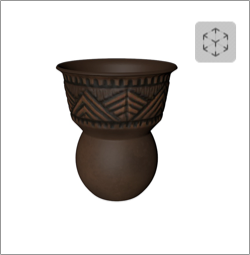

How to download the site
How I download the App?
Easy as 1… 2…3
If you’re having trouble getting the phone to download to your app. See the detials down below.
Icons illustrating how to launch application
1. Open archaeologymuseum.ca and click ‘Download AR app’ button.
2. Once open use your camera to scan the QR code to see the object in an AR space.
3. Choose the ‘AR’ option to view your artifact in real space.
4. Alternatively select 'object' mode if your phone doesn’t have the AR camera feature.
Examples on the web
Examples on the web

